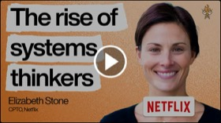

组织与领导力 9 集
同时属于
来自
时间
Netflix 产品负责人谈 AI 时代：每个人都能做一切,但卓越的专长不会消失
所以,可能是一个智能体编写了代码,或者我帮助进行了分析,而这并不是我的背景,但这并不意味着人们不需要对他
Elizabeth Stone · Netflix 产品负责人

Adam Mosseri：AI 时代的团队重组与产品品味
我实际上非常看好设计师，因为他们往往有品味，我认为这是更难想象被自动化掉的事情
Adam Mosseri · Instagram 负责人
当代码量暴涨8倍:Anthropic工程负责人谈AI时代的团队重构
对于任何你知道存在恐惧的事情,我的建议是拥抱它并问自己,好吧,有什么我能做的吗,什么在我的控制范围内。
Fiona Fung · 工程负责人

《精益创业》作者 Eric Ries 新作导读：好公司为什么会「变坏」
摧毁它们的东西不是竞争。
Eric Ries · 作者

Keith Rabois 的用人铁律：别招熟手、别做客户访谈、公开批评
你建立的团队就是你建立的公司。
Keith Rabois · 首席运营官

对话 Cisco CPO Jeetu Patel:大公司如何不掉队 AI 时代
大多数人在大公司里认为的是大公司不进行实验。事实上并非如此。大公司经常进行实验。大公司不做的是当一个实验
Jeetu Patel · Cisco CPO

育儿专家 Dr. Becky 谈职场领导力：怎么管“大号婴儿”
我认为修复是我们拥有的头号关系策略。
Dr. Becky Kennedy · 育儿专家
Rippling高管Matt MacInnis:成就伟业,你必须时刻保持极度紧绷
对我来说,我们要感觉公司里的每一个项目都是故意人手不足的,这一点真的很重要。
Matt MacInnis · Rippling 高管
别再充当团队的“答案机”：高管教练 Rachel Lockett 的领导力实战课
但伟大的领导者知道，当你试图一直提供建议并给出答案时，你实际上并没有装备你的团队去解决难题。
Rachel Lockett · 高管教练